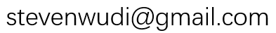
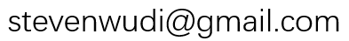

I am currently working for FITURE as a Lead Computer Vision Scientist. I was a senior data scientist at PingAn Property and Causality Insurance company. Prior to that, I was a postdoc at Shenzhen University, China. I finished my first postdoctoral research project at the Idiap Research Institue (affiliated to EPFL) in a beautiful Swiss Alpine mountain town. I received my PhD degree from the University of Sheffield in 2014 and Bachelor degree from Zhejiang University in 2010.
My research interests include using machine learning techniques, such as probabilistic graphical models and deep learning for high-level computer vision tasks, such as human action recognition, gesture recognition, multimedia retrieval and object recogition.
Currently, I have great passion in visual perception for autonomous driving and 2D to 3D vision.
The challenge is todevelop an algorithm to estimate the absolute pose of vehicles (6 degrees of freedom) from a single image in a real-world traffic environment.
As the main developer, I lead the team to finish the first in this challenge! The challenge is to design a system that can detect, reconstruct and estimate the 3D shape of the cars in a given video in a single image.
As the main developer, I lead the team to finish the 3rd in this challenge with cash prize! Participants include tech companies such as Megvii, DiDi, Nvidia Research, etc.
I have finished my very first International Computer Vision Summer School ( ICVSS2017) in the beautiful Sicily, Italy. It has been such a fun and rewarding experience to hang out with like-minded researchers!